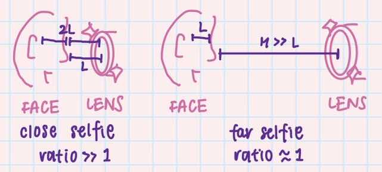

Part 1
When the face is close to the camera, the ratio of the distance from the camera to close features (e.g. nose) : the distance from the camera to far features (e.g. ears) is very high and disproportionate, causing distortion (left). In contrast, when the camera is placed further, because the distances between the face features (e.g. how much the nose sticks out from the face plane) is much lower than the distance of the camera to the face plane, that distortion is no longer present.
